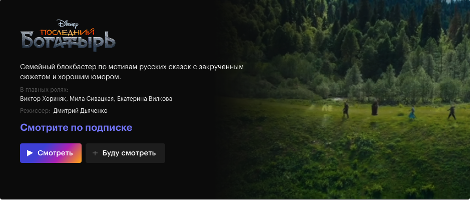

Популярное
- «Оскар-2022»: Номинанты
- В «Эйфории» снялись две порнозвезды. Как актеры из фильмов для взрослых переходят в большое кино?
- Что смотреть в 2022 году: 50 самых ожидаемых сериалов
- «В самом сексе проблемы нет»: создательницы фильма «Удовольствие» говорят, что порнография — это нормально, а не нормально насилие в ней
- Вместо «Бэтмена» — «Холоп», а «Анна К» заморожена. Что будет с киноиндустрией?
- 10 сериалов, которые могут стать новой «Игрой в кальмара»
- Что будет с российскими онлайн-кинотеатрами? Мы спросили у аналитиков и медиаэкспертов
- 15 фильмов, которые помогают нам в трудные времена
- 13 фильмов, над которыми плакала редакция КиноПоиска
- «Крестному отцу» — 50 лет. Мамонт в истории кино, оказавшийся мессией